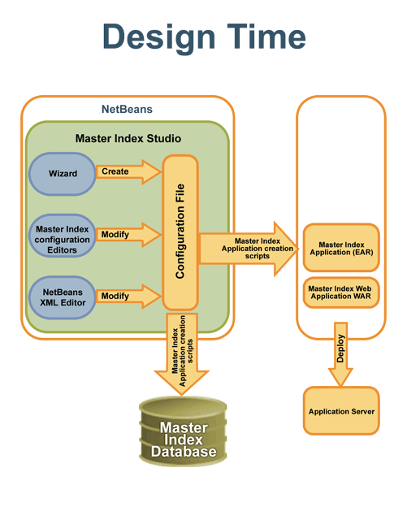
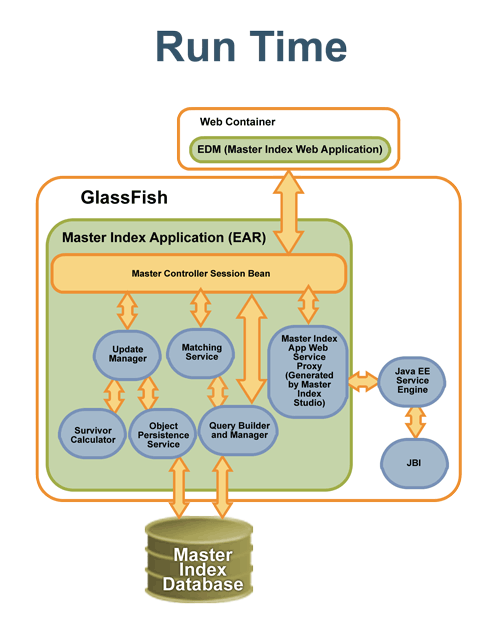

|
Community |  News |
|
|
||||
|
|
|||||
| The
Open Master Index project provides the capability to create any domain-specific master index through the matching, deduplication, merging, and cleansing of data from various data sources. Master Index Studio is the true and reliable alternative to proprietary, closed-source MDM, Customer Data Integration (CDI), and product information management (PIM) products. Master Index Studio leverages other open source projects and open standards, with extensive potential to jump-start and leverage auxiliary open-source efforts. Developers have the tools and runtime environment to create robust MDM applications. The Open Master Index project has these high-level features:
|
||||
Join our community!
Would you like to help expand or improve Open Master Index? Do you
have tips and tricks to share? Sign up here and join us!
|
||||
|
Documentation! Learn about open master index, how to access and build the files, and how to work with Master Index Studio here. For instructions on working with the source files and building your projects, click here. |
|||
|
News! Read the latest breaking news about Master Index Studio. Stay tuned to your community here! |
|||
| Architecture: | ||||
| The diagrams below illustrate the
architecture of the runtime and design environments for Master Index
Studio. In the design environment, the user defines the data structure
of business objects to be stored and cross referenced and also defines
the logic that determines how data is updated, standardized, weighted,
and matched in the master index. After the master index framework is
configured, Master Index Studio creates a master index application
(EJB) that can be deployed in the application server. In the runtime environment, information enters the master index system from the Enterprise Data Manager (a web-based user interface) or from external systems. The master index application uses the configured and predefined logic to determine how the new information is handled. |
||||
|  | ||||
|  | ||||